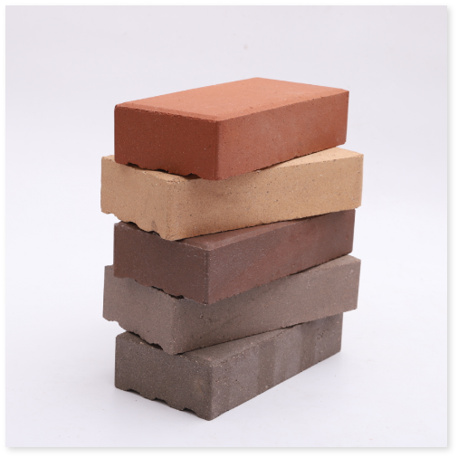
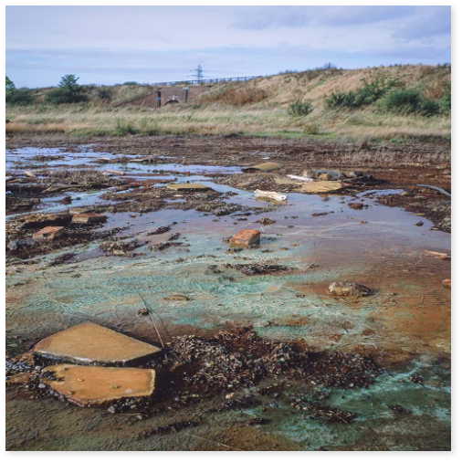
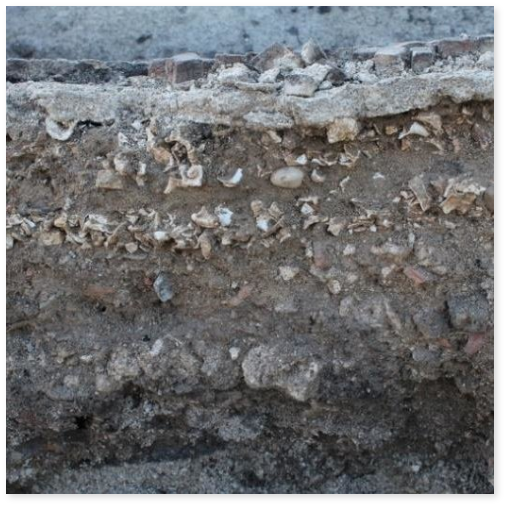
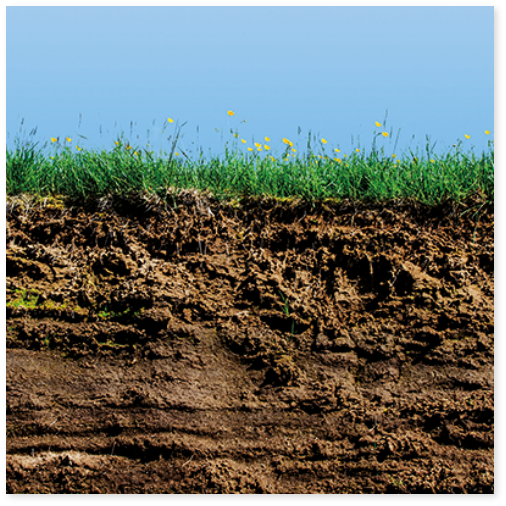

Full list and UKAS documentation can be found here.

Aggregates
| Test | UKAS CODE |
|---|---|
| Carbon dioxide content (reference method) | BS EN 196-2:2013 |
| Determination of water-soluble chloride salts using the Volhard method (reference method) | BS EN 1744-1:2009 + A1:2012 |
| Determination of water-soluble chloride salts by potentiometry (alternative method) | BS EN 1744-2:2013 |
| Determination of water-soluble chloride salts using the Mohr method (alternative method) | BS EN 1744-1:2009 + A1:2012 |
| Determination of water-soluble sulfates | BS EN 1744-1:2009 + A1:2012 |
| Total sulfur content | BS EN 1744-1:2009 + A1:2012 |
| Determination of acid soluble sulfates | BS EN 1744-1:2009 + A1:2012 |
| Acid soluble sulphide | BS EN 1744-1:2009 + A1:2012 |
| Lightweight contaminators | BS EN 1744-1:2009 + A1:2012 |
| Determination of loss on ignition | BS EN 1744-1:2009 + A1:2012 |
| Acid soluble chloride salts | BS EN 1744-5:2006 |
| Assessment of fines - methylene blue test | BS EN 933-9:2009+A1:2013 |
| Determination of the water content by drying in a ventilated oven | BS EN 1097-5:2008 |

Bricks
| Test | UKAS CODE |
|---|---|
| Soluble salt content | BS EN 772-5:2016 |
| Sulfate content | BS 3921:1985 (withdrawn) |

Cement
| Test | UKAS CODE |
|---|---|
| Determination of loss on ignition | BS EN 196-2:2013 |
| Gravimetric determination of sulfate | BS EN 196-2:2013 |
| Sulphide content | BS EN 196-2:2013 |
| Chloride content | BS EN 196-2:2013 |
| Alkali content | BS EN 196-2:2013 |

Concrete
| Test | UKAS CODE |
|---|---|
| Cement & aggregate content | BS 1881:Part 124:2015 + A1:2021 |
| Loss on ignition | BS 1881:Part 124:2015 + A1:2021 |
| Capillary porosity | BS 1881:Part 124:2015 + A1:2021 |
| Original water/cement ratio | BS 1881:Part 124:2015 + A1:2021 |
| Chloride content | BS 1881:Part 124:2015 + A1:2021 |
| Sulphate content | BS 1881:Part 124:2015 + A1:2021 |
| Sulphide content | BS 1881:Part 124:2015 + A1:2021 |
| Sodium oxide & potassium oxide contents | BS 1881:Part 124:2015 + A1:2021 |
| Chloride content – potentiometric method | BS EN 14629:2007 |
| Presence of High Alumina Cement by rapid chemical method | BRE Information Sheet IS 15/74 |
| Carbonation | BS EN 14630:2006 |
| Water absorption | BS 1881:Part 122:2011 |
| Density | BS EN 12390-7:2019 + AC 2020 |
| Metallic fibre content | BS EN 14721:2005+A1:2007 BS EN 14488-7:2006 |
| Non-metallic fibre content | Documented In-House Method No 27 using crushing and separation techniques in BS EN 14721:2005+A1:2007 |

Contaminated Land
| Test | UKAS CODE |
|---|---|
| Cadmium, chromium, copper, lead, nickel and zinc in soils | Documented In-House Method No 7 using atomic absorption spectroscopy |
| Hexavalent chromium in soils | Documented In-House Method No 8 using atomic absorption spectroscopy |

Gypsum Plaster
| Test | UKAS CODE |
|---|---|
| Sulphur trioxide and calcium oxide content | BS 1191:Part 1:1973 (withdrawn) |
| Soluble sodium and magnesium salt content | BS 1191:Part 1:1973 (withdrawn) |
| Loss on ignition | BS 1191:Part 1:1973 (withdrawn) |
| Free lime content | BS 1191:Part 1:1973 (withdrawn) |
| Soluble sodium and magnesium salt content | BS 1191:Part 2:1973 (withdrawn) |
| Free lime content | BS 1191:Part 2:1973 (withdrawn) |
| Sulfate | BS EN 13279-2:2014 |

Mortar and Screed
| Test | UKAS CODE |
|---|---|
| Insoluble residue and soluble silica | BS 4551:2005+A2:2013 |
| Calcium oxide content | BS 4551:2005+A2:2013 |
| Sulfur trioxide content | BS 4551:2005+A2:2013 |
| Total iron content | BS 4551:2005+A2:2013 |
| Aluminium oxide content | BS 4551:2005+A2:2013 |
| Mix proportions | BS 4551:2005+A2:2013 |
Paint
| Test | UKAS CODE |
|---|---|
| Total lead | BS 3900:Part B4:1986 |

Soil
| Test | UKAS CODE |
|---|---|
| Organic matter content | BS 1377:Part 3:1990 |
| Mass loss on ignition | BS 1377:Part 3:1990 |
| Sulphate content of soil and ground water - gravimetric method | BS 1377:Part 3:1990 |
| Carbonate content | BS 1377:Part 3:1990 |
| Water-soluble chloride content | BS 1377:Part 3:1990 |
| Acid-soluble chloride content | BS 1377:Part 3:1990 |
| Total dissolved solids | BS 1377:Part 3:1990 |
| pH value | BS 1377:Part 3:1990 |
| Moisture content - oven drying method | BS 1377:Part 2:1990 |
Other
| Test | UKAS CODE |
|---|---|
| GEOTECHNICAL INVESTIGATION and TESTING - Laboratory testing of soil - Water content | BS EN ISO 17892-1:2014 |
| WATER for making concrete - Qualitative preliminary inspection of mixing water | BS EN 1008:2002 |
| WATER for making concrete - Suitability of mixing water for concrete by quantitative appraisal: chloride, sulfate, sodium, potassium, lead, zinc, sugar, phosphate, nitrate | BS EN 1008:2002 |
| SALT for spreading on highways for winter maintenance - Chloride and Soluble sulphate compounds | BS 3247:2011 +A1:2016 |